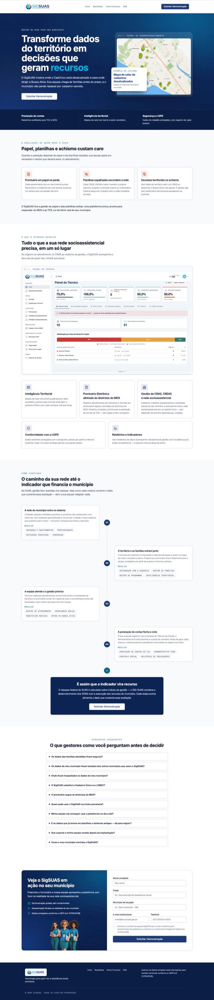
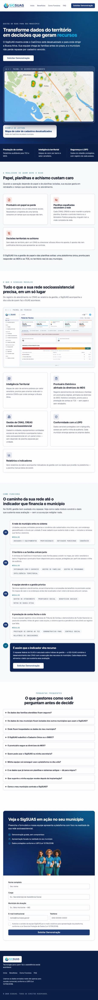
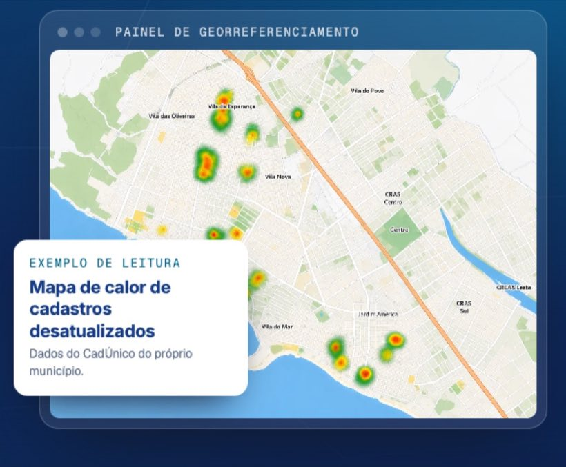
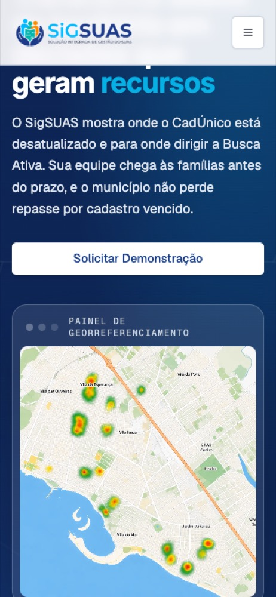

2 critérios de aceite, ambos evidenciados por navegador sobre o build real da landing. CA03 comprovado por capturas de página inteira nas três resoluções pedidas (1440, 768 e 375), sustentadas pela revisão de acessibilidade AA já aplicada (contraste medido, tipografia mínima de 12px, alvos de toque de 44px, foco visível) e pelos 3 cenários automatizados de acessibilidade da suíte. CA04 comprovado por capturas do mapa de calor de georreferenciamento com o card-legenda 'Exemplo de leitura' nítido em desktop e mobile.
| CA | Critério | Status |
|---|---|---|
| CA03 | Consistência visual e acessibilidade | ATENDIDO · navegador + automatizado |
| CA04 | Refinamento da simulação de inteligência territorial | ATENDIDO · navegador |
Critério (Gherkin): Dado que o refinamento de interface foi implementado, Quando inspeciono a página em telas com resoluções diversas (Desktop, Tablet e Smartphone), Então o layout se ajusta proporcionalmente com espaçamentos harmoniosos e alto nível de legibilidade.
Como foi testado: Abrir o build real da landing e capturar a página inteira em três resoluções: Desktop 1440×900, Tablet 768×1024 e Smartphone 375×812, com todas as imagens carregadas.


Critério (Gherkin): Dado que o visitante rola a tela até a seção do mapa de calor de georreferenciamento, Quando o bloco entra em área visível, Então os elementos gráficos e legendas indicativas são renderizados com nitidez, destacando o valor analítico da funcionalidade.
Como foi testado: Abrir a página e capturar a vitrine do Painel de Georreferenciamento com o card-legenda em desktop (1440) e em smartphone (375), aguardando a decodificação completa das imagens.


Não existe story oficial para a HU #10146 no repositório; os critérios foram extraídos literalmente do ticket GLPI. As evidências refletem o estado entregue em develop até o commit d06be5f do repositório da landing.
O ticket cita "a seção do mapa de calor de georreferenciamento". No redesenho aprovado em 2026-08-20, a seção territorial dedicada foi removida e a simulação do mapa de calor passou a viver na vitrine de abertura da página (topo), com o card-legenda "Exemplo de leitura" — o visitante a vê imediatamente, sem precisar rolar. As evidências do CA04 retratam essa localização atual.
Running 32 tests using 5 workers - 5 [desktop] › tests/e2e/landing.spec.ts:166:1 › CA02 — em viewport mobile o menu vira hambúrguer (Sheet) ✓ 4 [desktop] › tests/e2e/landing.spec.ts:84:1 › HERO-V5 — hero assimétrico com vitrine e faixa de indicadores (725ms) ✓ 3 [desktop] › tests/e2e/landing.spec.ts:34:1 › CA01 — página única com as 8 seções da estrutura v2 (764ms) ✓ 1 [desktop] › tests/e2e/landing.spec.ts:59:1 › BENEFITS-SHOWCASE — benefícios abrem com o Painel do Técnico e 5 cards uniformes (829ms) ✓ 2 [desktop] › tests/e2e/landing.spec.ts:116:1 › HOW-IT-WORKS-TIMELINE — 4 atos com 4 módulos cada e desfecho de resultado (933ms) ✓ 8 [desktop] › tests/e2e/landing.spec.ts:219:1 › LEAD-PANEL — painel territorial da seção de demonstração mantém copy e equipe (401ms) ✓ 7 [desktop] › tests/e2e/landing.spec.ts:202:1 › V2-FAQ — accordion nativo abre e fecha as perguntas (541ms) ✓ 9 [desktop] › tests/e2e/landing.spec.ts:246:1 › CA05 — envio válido exibe a mensagem exata de sucesso (modo mock) (699ms) ✓ 10 [desktop] › tests/e2e/landing.spec.ts:256:1 › L3 — honeypot preenchido é aceito em silêncio (proteção anti-bot) (534ms) ✓ 11 [desktop] › tests/e2e/landing.spec.ts:271:1 › CA06 — município vazio bloqueia envio e destaca o campo (458ms) ✓ 12 [desktop] › tests/e2e/landing.spec.ts:281:1 › V2-CONSENT — consentimento LGPD desmarcado bloqueia o envio (383ms) ✓ 13 [desktop] › tests/e2e/landing.spec.ts:292:1 › A11Y-FOCUS — foco visível por teclado nas superfícies clara e escura (343ms) ✓ 14 [desktop] › tests/e2e/landing.spec.ts:325:1 › A11Y-FAQ-KEYBOARD — perguntas do FAQ operáveis por Enter e Espaço, com foco visível (321ms) ✓ 15 [desktop] › tests/e2e/landing.spec.ts:348:1 › A11Y-HEADINGS — um único h1 e hierarquia sem salto de nível (282ms) ✓ 16 [desktop] › tests/e2e/landing.spec.ts:361:1 › FOOTER-DARK — footer escuro com 4 links rápidos, sem "Demonstração" (291ms) ✓ 17 [mobile] › tests/e2e/landing.spec.ts:34:1 › CA01 — página única com as 8 seções da estrutura v2 (220ms) ✓ 18 [mobile] › tests/e2e/landing.spec.ts:59:1 › BENEFITS-SHOWCASE — benefícios abrem com o Painel do Técnico e 5 cards uniformes (261ms) - 21 [mobile] › tests/e2e/landing.spec.ts:183:1 › V2-NAV — âncoras do header e do CTA levam às 5 seções ✓ 19 [mobile] › tests/e2e/landing.spec.ts:84:1 › HERO-V5 — hero assimétrico com vitrine e faixa de indicadores (226ms) ✓ 22 [mobile] › tests/e2e/landing.spec.ts:202:1 › V2-FAQ — accordion nativo abre e fecha as perguntas (317ms) ✓ 23 [mobile] › tests/e2e/landing.spec.ts:219:1 › LEAD-PANEL — painel territorial da seção de demonstração mantém copy e equipe (258ms) ✓ 24 [mobile] › tests/e2e/landing.spec.ts:116:1 › HOW-IT-WORKS-TIMELINE — 4 atos com 4 módulos cada e desfecho de resultado (412ms) ✓ 20 [mobile] › tests/e2e/landing.spec.ts:166:1 › CA02 — em viewport mobile o menu vira hambúrguer (Sheet) (970ms) ✓ 6 [desktop] › tests/e2e/landing.spec.ts:183:1 › V2-NAV — âncoras do header e do CTA levam às 5 seções (3.3s) ✓ 27 [mobile] › tests/e2e/landing.spec.ts:271:1 › CA06 — município vazio bloqueia envio e destaca o campo (352ms) ✓ 28 [mobile] › tests/e2e/landing.spec.ts:281:1 › V2-CONSENT — consentimento LGPD desmarcado bloqueia o envio (361ms) ✓ 30 [mobile] › tests/e2e/landing.spec.ts:348:1 › A11Y-HEADINGS — um único h1 e hierarquia sem salto de nível (152ms) ✓ 29 [mobile] › tests/e2e/landing.spec.ts:325:1 › A11Y-FAQ-KEYBOARD — perguntas do FAQ operáveis por Enter e Espaço, com foco visível (208ms) ✓ 31 [mobile] › tests/e2e/landing.spec.ts:361:1 › FOOTER-DARK — footer escuro com 4 links rápidos, sem "Demonstração" (185ms) ✓ 25 [mobile] › tests/e2e/landing.spec.ts:246:1 › CA05 — envio válido exibe a mensagem exata de sucesso (modo mock) (1.4s) ✓ 32 [mobile] › tests/e2e/landing.spec.ts:292:1 › A11Y-FOCUS — foco visível por teclado nas superfícies clara e escura (185ms) ✓ 26 [mobile] › tests/e2e/landing.spec.ts:256:1 › L3 — honeypot preenchido é aceito em silêncio (proteção anti-bot) (2.7s) 2 skipped 30 passed (6.9s)